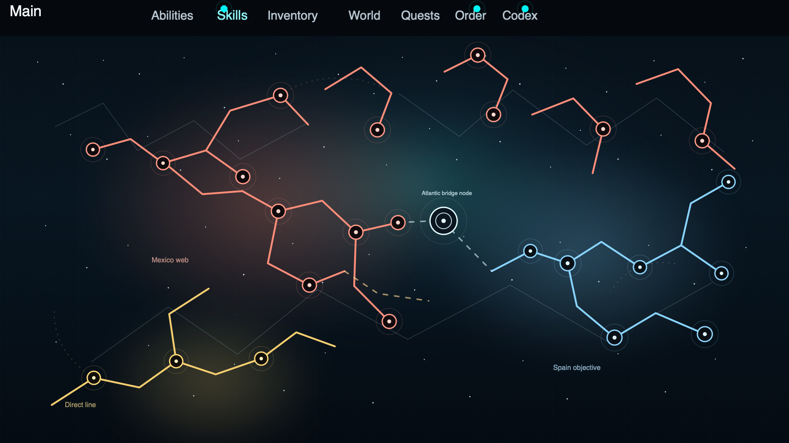

Evidence first
Proposed updates are grounded in sources, not just language-model fluency.
Agentic research for family trees
ProofBranch is building a Codex-powered research layer for family history products. It runs evidence-seeking workflows across records, people, places, and timelines, then hands back a reviewable branch before anything is written into the tree.
Founder-led, prelaunch, and focused on evidence-backed genealogy work.
From source to tree
01
Start with a person, a place, or a weak link. ProofBranch looks for records, source images, household clusters, and timeline clues that belong in the same investigation.
02
Dates, names, relationships, locations, and conflicts are checked against each other before the system suggests a new person, fact, source, or branch connection.
03
The output is a draft a researcher can inspect, approve, edit, or reject. Nothing should write itself into a family tree without a human decision.
Why agentic beats chat-only
ProofBranch is designed for workflows that keep going: find the next record, extract what matters, compare it to what is already known, and carry forward only the parts that survive review.
That makes it useful for real family-history work, where the hard part is not writing prose, it is deciding what belongs in the tree and what still needs proof. The raw material is still the job: manuscripts, indexes, household pages, messy names, and conflicting dates that need more than one pass.

Built for serious research
Proposed updates are grounded in sources, not just language-model fluency.
The workflow treats relationships, chronology, and duplicate risk as part of the job, not cleanup after the fact.
The researcher stays in charge of approval, wording, and the final write-back decision.
Prelaunch
ProofBranch is being built as a focused product for evidence-backed family-history research.
Start a conversation